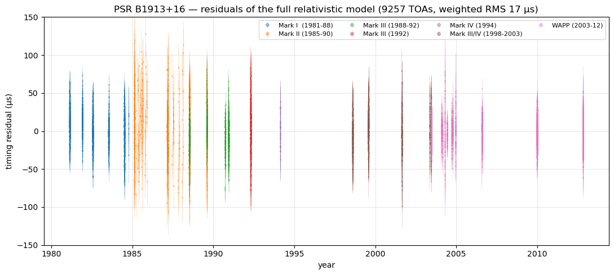
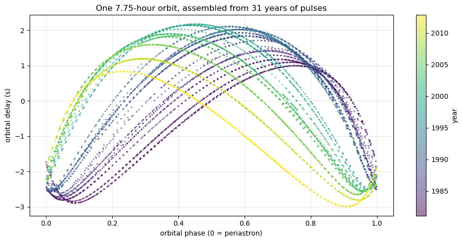
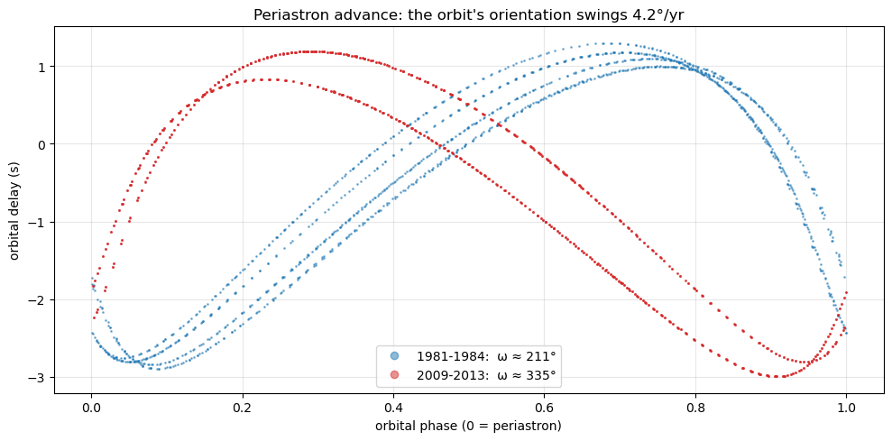
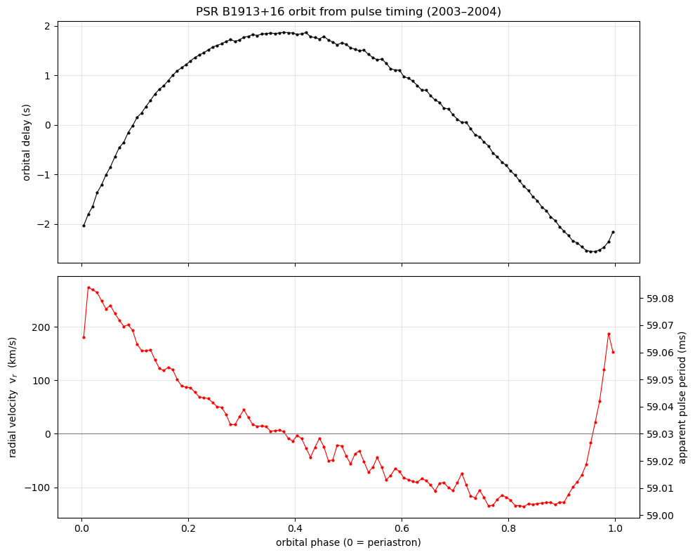
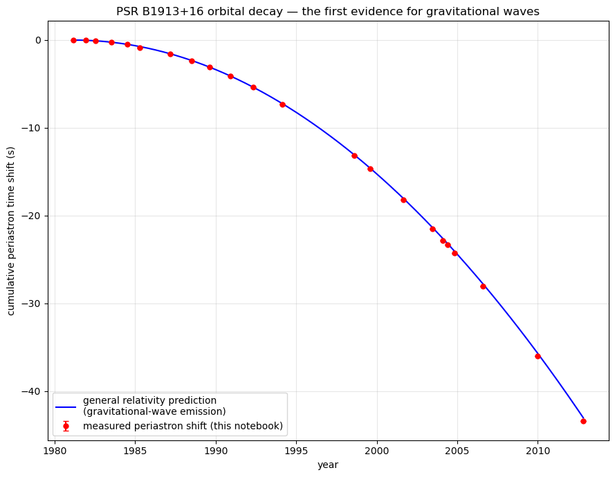

PSR B1913+16: a clock thrown into orbit
Russell Hulse & Joseph Taylor, Arecibo Observatory
A pulsar is a spinning neutron star that sweeps a radio beam past Earth like a lighthouse — a natural clock of astonishing stability. In the summer of 1974, graduate student Russell Hulse, running a pulsar survey with Joseph Taylor at Arecibo, found one ticking every 59 milliseconds. But this clock misbehaved: its period drifted back and forth by tens of microseconds from one day to the next, in a pattern that repeated every 7.75 hours.
That is not a broken clock — it is a moving clock. The pulsar's ticks arrive squeezed together when it swings toward us and stretched apart when it swings away: the Doppler effect, exactly as in spectroscopy, but read from pulse arrival times instead of spectral lines. The 7.75-hour cycle is an orbit: the pulsar is locked in a tight binary with another neutron star, whipping around at up to ~300 km/s in an orbit smaller than the Sun. A precise clock on an extreme orbit — the perfect laboratory for testing gravity.
A. What exactly is ticking? A city-sized star spinning 17 times a second
A pulsar is a neutron star: the collapsed core left behind when a massive star dies in a supernova — more than a Sun's worth of mass crushed into a ball about 20 km across, dense as an atomic nucleus. Its magnetic field funnels radio emission into two narrow cones anchored to the magnetic poles, and because the magnetic axis is tilted from the spin axis, the cones sweep the sky like a lighthouse. We register a pulse each time a beam crosses Earth. The star is not blinking — we are being swept. (The full discovery story — Jocelyn Bell's "bit of scruff," and how a pulse width alone weighs a star to death — is in the radio astronomy companion.)
The lighthouse in motion
Looking straight down the pulsar's spin axis: the rose cone is the radio beam, whirling once per rotation, and the strip on the right is the signal Earth actually records. The default is PSR B1913+16 itself — a 59-millisecond rotation, 17 sweeps every second (animation slowed about 4×). Slide the period out to 1.34 s to see Jocelyn Bell's first pulsar for comparison, and widen or narrow the cone to change the pulse width. This metronome, unattended, keeps time to better than a microsecond — that is the instrument nature dropped into an extreme orbit.
B. The two stars: a matched pair, only one of them talking
PSR B1913+16 sits about 21,000 light-years away in Aquila. The system is two neutron stars of almost identical mass — but only one is a pulsar to us. The diagram below is drawn to scale (except the stars themselves): each star traces its own ellipse around the shared center of mass, and the entire orbit is comparable in size to the Sun.
| Property | PSR B1913+16 (the pulsar) | The companion |
|---|---|---|
| What it is | Neutron star — detected directly | Neutron star — inferred, never seen at any wavelength |
| Mass | 1.4398 ± 0.0002 M☉ | 1.3886 ± 0.0002 M☉ |
| Size | ~20 km across | ~20 km across |
| Spin | 59.03 ms — 17 turns per second | Unknown |
| Radio beam | Sweeps across Earth every rotation | None reaches us — quiet, or aimed elsewhere |
| Likely history | The older star: "recycled" — spun up and smoothed by gas stolen from its partner | The younger star: born in the second supernova, which also made the orbit eccentric |
| Role in the experiment | The clock | The silent mass that swings the clock |
How nature builds a double neutron star — and why only one talks
Start with two massive stars orbiting each other. The heavier one dies first: supernova, leaving neutron star #1. Ages later its partner swells and dumps gas onto that neutron star — the infalling matter spins it up ("recycling") to its brisk 59-ms rotation and quiets its magnetic field, turning it into an exceptionally smooth, long-lived clock (its timing age is ~100 million years). Then the partner explodes in turn: neutron star #2, and the kick of that second supernova wrenched the orbit into the $e = 0.617$ ellipse we observe. The recycled old star is the steady pulsar we hear; the young one either beams away from us or has already faded to radio silence.
And how do we know the unseen companion is a neutron star at all? Its own gravity betrays it. The relativistic timing (periastron advance plus time-dilation effects) pins both masses to three decimal places — 1.39 M☉ for the companion. A normal star of that mass would be nearly Sun-sized: at a periastron of 1.1 R☉ it would be tidally shredded and dragging on the orbit, and it would shine. A white dwarf is harder to exclude but still Earth-sized, and would raise measurable tides. Only something as compact as a neutron star lets the orbit behave as two clean point masses — which, to exquisite precision, it does.
C. Reading the orbit from the ticks
Now put the lighthouse in motion around the companion. The clock is perfect; its apparent tick rate is not — and that mismatch is pure orbital velocity, via Doppler.
Read the orbit from the ticks
This is what Hulse saw. The plot shows the pulsar's apparent pulse period over one orbit: when the pulsar approaches us the ticks bunch up (period reads short), when it recedes they spread out (period reads long). The real orbit is very eccentric ($e = 0.617$) — drag the eccentricity slider and watch the curve go from a gentle sine wave (circular orbit) to the sharp, lopsided spike of a body that slingshots through periastron. The lopsidedness is itself data: it told Hulse and Taylor the orbit's shape and orientation before anyone saw the companion.
Why a binary pulsar is a gravity laboratory
Both objects are neutron stars — ~1.4 solar masses squeezed into ~20 km — orbiting so tightly that their separation swings between roughly 1.1 and 4.8 solar radii. Orbital speeds reach a thousandth of the speed of light, and the pulsar clock lets you time the orbit to microseconds. Relativistic effects that are barely measurable for Mercury (43″/century of periastron advance) are enormous here: PSR B1913+16's periastron advances 4.2° per year — over 35,000× Mercury's rate. If Einstein's gravity has consequences Newton's lacks, this is where they show up first.
Newton says the orbit is forever. Einstein says it's leaking.
Two isolated stars in Newtonian gravity orbit unchanged for eternity. In general relativity the orbit itself must broadcast energy away.
The shrinking orbit: gravitational waves, weighed
How a timing residual became a Nobel Prize
Here is the fork in the road. In Newtonian gravity an isolated two-body orbit is perfectly stable: the orbital period of PSR B1913+16 should stay 7.75 hours forever, and the time of each periastron passage should tick forward like clockwork. In general relativity, two masses in orbit are a churning mass distribution, and a churning mass must radiate gravitational waves — ripples in spacetime that carry real energy away at the speed of light. The orbit pays that energy bill the only way it can: by shrinking. The stars fall closer together, and (by Kepler's third law) the orbital period gets steadily shorter.
The predicted rate is absurdly small: the 27,000-second orbit shortens by about 76 microseconds per year ($\dot P_b = -2.4\times10^{-12}$ — about 2.4 picoseconds lost per second). No stopwatch could see that. But the effect accumulates: if each orbit is a hair shorter than the last, periastron arrives earlier and earlier compared to a constant-period prediction, and the offset grows as the square of elapsed time — a parabola. Taylor and collaborators timed periastron for decades. The data fell on the GR parabola to within a fraction of a percent.
The parabola that proved it
This is the most famous plot in gravitational-wave astronomy, rebuilt live. The dashed line at zero is Newton's prediction: constant orbital period, periastron always on time. The curve is general relativity's prediction — periastron arriving early by an amount growing quadratically as the orbit decays. Dots are the observed periastron times. Drag the slider to extend the observing campaign and watch the two theories separate: after a few years they are indistinguishable; after thirty, Newton is ruled out by half a minute.
The logic, step by step
Why a shrinking orbit counts as a detection of gravitational waves:
- GR demands radiation. Einstein's 1916 quadrupole formula gives the power radiated by an orbiting pair: $$P \;=\; \frac{32}{5}\,\frac{G^4}{c^5}\,\frac{(m_1 m_2)^2 (m_1+m_2)}{a^5}\,f(e),$$ where $f(e)$ is an eccentricity enhancement factor — for $e=0.617$ the waves carry away ~12× more power than a circular orbit would. For PSR B1913+16 this is about $7\times10^{24}$ W: roughly 2% of the Sun's entire luminosity, emitted as pure spacetime ripple.
- Radiated energy must come from the orbit. The binary's orbital energy is $E=-Gm_1m_2/2a$. Losing energy makes $a$ shrink, and Kepler's third law then forces the period down at a computable rate: $\dot P_b = -2.40\times10^{-12}$, with every quantity fixed by the measured masses and orbit. No free parameters.
- Newton predicts exactly zero. There is no gravitational radiation in Newtonian gravity — the clean null hypothesis. Any measured decay at the GR rate is direct evidence the waves exist and carry the predicted energy.
- The measurement. Decades of Arecibo timing: observed $\dot P_b$ (after correcting for the binary's acceleration in the Galaxy) agrees with the GR prediction to $\sim$0.2%.
The far future of the system
The decay is relentless and self-accelerating: as the orbit shrinks, the $1/a^5$ in the power formula makes the radiation stronger, which shrinks the orbit faster. In roughly 300 million years the two neutron stars will spiral together and merge in a final burst of gravitational waves — precisely the kind of event LIGO now detects from other galaxies (and did, for a neutron-star pair, in 2017 as GW170817).
From the energy bill to the wave itself
The binary pulsar proved the waves exist. Catching one in the act required measuring a length change of a thousandth of a proton.
LIGO: a ruler made of light
How you measure a distortion of space itself
A passing gravitational wave does something deeply strange: it alternately stretches space in one direction while squeezing it in the perpendicular direction, then swaps, oscillating at the wave's frequency. Free-floating objects don't feel a force — the distance between them changes because the space they sit in changes. The fractional change is called the strain, $h = \Delta L / L$, and for astrophysical sources reaching Earth it is fantastically small: $h \sim 10^{-21}$.
That number sets the design. Since $\Delta L = h\,L$, you want $L$ as long as possible — so LIGO is an L-shaped Michelson interferometer with 4-kilometer arms. A laser is split down the two arms, bounces off mirrors suspended as free-hanging pendulums, and recombines. Normally the two returning beams are held in almost perfect destructive interference — the output port is dark. But a gravitational wave lengthens one arm while shortening the other, shifting the recombined light's phase, and the output port brightens in time with the wave. Fabry–Pérot cavities bounce the light ~300 times per arm (effective length ~1200 km), and even then the length change being measured is about $10^{-18}$ m — a thousandth of the width of a proton. Two detectors 3000 km apart (Hanford, Washington and Livingston, Louisiana) must ring in coincidence, or the signal is discarded as local noise.
Squeeze and stretch: the interferometer responds
Left: a ring of free-floating test particles with a gravitational wave passing straight through the page — space stretches vertically while squeezing horizontally, then swaps, through the wave's cycle. The two amber bars are LIGO's arms sampling exactly those two directions. Right: the light intensity at the output port over the cycle — dark when the arms match, bright when they differ. The strain here is around $10^{20}$ times exaggerated; set it to see how the pattern (not the size) is what LIGO reads. Drag the wave phase slider through a full cycle, or press play.
Why two (and now more) detectors
At $10^{-18}$ m, everything is noise: trucks, surf pounding a coastline hundreds of km away, thermal jiggling of the mirror coatings, even quantum fluctuations of the laser light itself. The killer test is coincidence: a real gravitational wave sweeps past Earth at the speed of light and must appear in both LIGO sites within 10 milliseconds, with the same waveform. The slight arrival-time difference also gives a rough sky direction — and with Virgo (Italy) and KAGRA (Japan) added, triangulation becomes real astronomy.
GW150914: two black holes, heard
The chirp that opened a new astronomy
At 09:50:45 UTC on 14 September 2015 — during an engineering run, days before the official observing start — both LIGO detectors recorded the same 0.2-second signal, Livingston first, Hanford 6.9 ms later. The waveform swept upward from 35 Hz to about 250 Hz while growing in amplitude, then rang down and stopped: a chirp. That shape is exactly what relativity predicts for the endpoint of the Hulse–Taylor story: two compact objects whose orbit has decayed all the way, spiraling together faster and faster, radiating harder and harder, until they touch and merge.
The numbers read straight off the waveform. The frequency and its acceleration give the chirp mass, pinning the system at roughly 36 and 29 solar masses — too heavy to be neutron stars, and orbiting a few hundred km apart at half the speed of light just before merger: unmistakably black holes. The final black hole weighed ~62 M☉. The missing 3 solar masses were radiated as gravitational waves in a fraction of a second — a peak power greater than the light output of every star in the observable universe combined. The signal had traveled 1.3 billion years to arrive at a strain of $1.0\times10^{-21}$.
Build the chirp
Dial in the two masses and see the gravitational waveform of their final second. Physics to notice: the wave frequency is twice the orbital frequency (the mass distribution repeats every half orbit); the sweep gets faster as the orbit shrinks (runaway energy loss, the same $1/a^5$ as Hulse–Taylor); and the signal cuts off near the merger frequency, set by the total mass. Heavier pairs merge at lower frequency — make the black holes very heavy and the chirp barely climbs before ending; make them neutron-star light (1.4 + 1.4) and it screams up past a kilohertz. GW150914's actual masses are preset.
How a waveform weighs black holes
Three readings from one squiggle:
- The sweep rate gives the chirp mass. Leading-order GR gives $\dot f \propto \mathcal{M}^{5/3} f^{11/3}$, where $\mathcal{M} = (m_1 m_2)^{3/5}/(m_1+m_2)^{1/5}$. Measure $f$ and $\dot f$ at any moment and $\mathcal{M}$ falls out: ~30 M☉ for GW150914, far above any neutron star.
- The cutoff frequency gives the total mass — and the compactness. Heavier systems merge at lower frequency (merger happens when the objects are separations-of-a-few-Schwarzschild-radii apart, and $f_\mathrm{merge}\propto 1/M_\mathrm{tot}$). GW150914 was still sweeping upward at 150 Hz, where Kepler's law puts two ~30 M☉ objects only ~350 km apart — closer than any pair of stars or neutron-star-plus-anything could get without already touching. Only black holes fit.
- The amplitude gives the distance. Strain falls off as $1/d$; knowing the masses fixes the intrinsic loudness, so the observed $10^{-21}$ places the source ~410 Mpc (1.3 billion light-years) away. No cosmic distance ladder required — the waveform is a standard siren.
A detector the size of the Galaxy
LIGO hears cycles per second. For waves that take years per cycle, you need arms thousands of light-years long — and nature has already built them.
Pulsar timing arrays: the Galaxy as detector
Back to pulsars — this time as the instrument, not the source
The story closes a loop. In 1974 a pulsar's clock revealed gravitational waves indirectly; today, pulsar clocks are the detector. The targets are millisecond pulsars — old neutron stars spun up to hundreds of rotations per second, whose long-term timing stability rivals atomic clocks. If a gravitational wave passes between a pulsar and Earth, it rhythmically stretches and squeezes the space the radio pulses cross, so the ticks arrive a few tens of nanoseconds early or late. One pulsar's residuals look like noise. The trick is to watch dozens of pulsars all over the sky for decades — an interferometer with arms thousands of light-years long.
This makes the Galaxy sensitive to a band no ground detector can touch: nanohertz waves, one cycle per years to decades. LIGO's band (10–1000 Hz) hears stellar-mass black holes in their final second; the nanohertz band hears supermassive black hole binaries — pairs of $10^8$–$10^9$ M☉ giants left orbiting each other after their host galaxies merged, each pair a Hulse–Taylor system scaled up a hundred million times, still centuries of cycles from merging. Summed over the whole universe they should produce not a chirp but a stochastic background hum.
The Hellings–Downs smoking gun
How do you tell a real gravitational-wave background from clock drift or Earth-atmosphere effects? By correlation between pulsars. A wave background makes pulsars in similar sky directions run early/late together, while pulsars ~90° apart are slightly anti-correlated — because the same quadrupolar stretch-one-way-squeeze-the-other pattern you saw in the LIGO ring lab is now imprinted on the sky. GR predicts the exact curve of correlation vs. angular separation: the Hellings–Downs curve. Clock errors would correlate every pair equally (flat line); planetary-ephemeris errors give a dipole. Add pulsar pairs and years of timing and watch the measured points converge on the quadrupolar signature.
Where this stands
In June 2023, NANOGrav (15 years of data, 68 pulsars) — together with European, Australian, Indian and Chinese arrays — reported a common-spectrum signal with the Hellings–Downs correlation pattern at the 3–4σ level: strong evidence for the nanohertz gravitational-wave background, most plausibly the combined hum of supermassive black hole binaries throughout the universe. It is the same three-act play again: find a clock, trust the clock, and let its tiny misbehavior reveal spacetime in motion.
The arc of the story
Newtonian gravity: binary orbits are stable forever. General relativity: orbiting masses must radiate gravitational waves and spiral inward. For decades the effect seemed hopelessly unmeasurable.
Hulse & Taylor find PSR B1913+16: a 59-ms pulsar clock in a 7.75-hour binary. Its periastron arrives early along the exact parabola GR predicts for energy lost to gravitational waves — agreement to ~0.2%. Nobel 1993.
LIGO measures arm-length changes of $10^{-18}$ m and catches GW150914: the chirp of two ~30 M☉ black holes merging 1.3 billion light-years away — the binary-decay story caught in its final 0.2 seconds. Nobel 2017.
Pulsar timing arrays turn dozens of millisecond pulsars into a Galaxy-sized detector and find strong evidence for the nanohertz background — the collective hum of supermassive black hole binaries, correlated across the sky along the Hellings–Downs curve.
Try it yourself
In Section 2, slide the campaign back to ~5 years and see why patience was the whole experiment — Newton and Einstein are indistinguishable at first. In Section 4, set both masses to 1.4 M☉ and watch the merger frequency leap past a kilohertz: that is GW170817, the neutron-star merger, and why its chirp lasted ~100 seconds in band instead of 0.2. In Section 5, crank the array to 70 pulsars and watch a curve emerge from what looked like noise.
Test yourself
§Practice problems
1. A gravitational wave with strain $h = 1.0\times10^{-21}$ passes through LIGO ($L = 4$ km). What arm-length change must be measured, and how does it compare to a proton (diameter $\sim1.7\times10^{-15}$ m)?
Show solution
- Length change. $\Delta L = h\,L = (1.0\times10^{-21})(4\times10^{3}\,\mathrm{m}) = 4\times10^{-18}$ m.
- Compare. $\Delta L / d_p = 4\times10^{-18} / 1.7\times10^{-15} \approx 1/425$.
2. Compute the chirp mass $\mathcal{M} = (m_1 m_2)^{3/5}/(m_1+m_2)^{1/5}$ for GW150914 ($m_1 = 36$, $m_2 = 29$ M☉), and for the Hulse–Taylor pulsar ($1.44$ and $1.39$ M☉).
Show solution
- GW150914. $m_1 m_2 = 1044$; $(1044)^{3/5} = e^{0.6\ln 1044} \approx 64.6$. $(65)^{1/5} \approx 2.30$. $\mathcal{M} \approx 64.6/2.30 \approx 28$ M☉.
- Hulse–Taylor. $m_1 m_2 = 2.00$; $(2.00)^{3/5} \approx 1.52$. $(2.83)^{1/5} \approx 1.23$. $\mathcal{M} \approx 1.24$ M☉.
3. PSR B1913+16's orbital period ($P_b = 27{,}907$ s) shrinks at $\dot P_b = -2.40\times10^{-12}$. How much shorter is the period after one year, and roughly how early does periastron arrive after 30 years of accumulation? (Use $\Delta t \approx \tfrac12 (\dot P_b / P_b)\, T^2$.)
Show solution
- Per year. $\Delta P_b = \dot P_b \times 3.156\times10^{7}\,\mathrm{s} = -7.6\times10^{-5}$ s ≈ −76 µs per year.
- Cumulative shift. $T = 30$ yr $= 9.47\times10^{8}$ s. $\Delta t \approx \tfrac12 \times (2.40\times10^{-12}/27907) \times (9.47\times10^{8})^2 \approx 38.5$ s early.
The Hulse–Taylor result, rebuilt from the raw Arecibo data
Five figures from hulse_taylor_binary_pulsar.ipynb — every plot in this appendix is computed from real measurements, not formulas
Everything above this point is drawn live from the leading-order relativistic formulas. This appendix is different: these five figures come from re-running the actual analysis on the actual data — the 9,257 Arecibo pulse times of arrival spanning 1981–2012, published open-access by Weisberg & Huang (2016) and fit with the modern pulsar-timing package PINT. Each figure is one step in a chain of hypothesis and test: what was assumed, what was proposed, why the test would be decisive, and what the data said. The chain matters — each step's finding becomes the next step's assumption, and by the last figure there are no free parameters left at all.
Sidebar — what a residual is, and why everything below lives in them
What a residual is. The timing model is a formula that predicts, for every numbered pulse — all ~5 billion of them across 31 years — the exact instant it should arrive at the telescope. A residual is simply observed minus predicted: how early or late a pulse actually showed up. Each dot in the figures below is the model's error on one measurement. "No patterns" means the model has nothing left to explain; any structure — a slope, a wave, a curve — is physics the model is missing.
Why work in residuals instead of raw arrival times? First, dynamic range: the raw arrival times span 31 years (~10⁹ s) but are measured to microseconds — parts in 10¹⁵. No plot, and no eye, can see a microsecond riding on a decade. Subtracting the model strips away the enormous part you already understand and leaves only the tiny part you don't, magnified to fill the whole axis. Second — and this is the real reason timing is built on them — every piece of physics leaves its own signature shape in the residuals: a wrong spin period tilts them into a straight line; a wrong sky position injects a one-year sine wave (Earth's orbit is being corrected for imperfectly); an unmodeled companion writes a repeating sawtooth at the orbital period; orbital decay bends them into a parabola. Fitting a pulsar means adjusting parameters until every one of those shapes vanishes. And the logic runs backwards too: delete a term from the model and its full signal reappears in the residuals, alone and uncontaminated — exactly the trick A.2 uses to exhibit the orbit and A.5 uses to exhibit the decay.
The null — if A.1's residuals had shown a pattern. Then the model would be incomplete, and every alternative explanation would still be alive. An annual wobble would say the astrometry is wrong; extra scatter appearing only in some eras would say instrumental offsets are being mishandled; a slow random wander would say the pulsar's own clock is unstable — "timing noise," common in young pulsars. That last one is the killer: a clock that drifts on its own cannot testify about gravitational waves, because a decay signature of a few seconds accumulated over decades could then be dismissed as clock wander. The flat 17-µs band is what forecloses those escapes. It certifies clock, model, and instruments all at once — so when a pattern does appear after a term is deliberately removed, that pattern must belong to the removed term and nothing else.
Notice the inversion, though: patterns in residuals are not failures — unexplained patterns are. The discovery itself is a residual pattern: hold $\dot P_b = 0$ in the model and the residuals grow the quadratic signature of A.5. The whole game is moving structure, one piece at a time, from the unexplained column to the explained one — until what remains is noise.
A.1 First, trust the clock — the timing residuals
A pulsar is a stable rotator, so every pulse's arrival time should be fully described by a physical model: spin-down + Earth's motion + a Keplerian orbit + three general-relativistic corrections ($\dot\omega$, time dilation $\gamma$, orbital decay $\dot P_b$). Nothing else.
Subtract that model's predicted arrival times from all 9,257 measured ones. Rationale: if the assumption holds, what remains (the "residuals") must be pure structureless noise — any wobble, drift, or curve left over would be physics missing from the model.
Fit the published timing solution with PINT and plot residuals across all 31 years, colored by receiver era (the instrumentation was upgraded repeatedly from Mark I to WAPP).

The clock and the model are both good. This is the foundation everything else stands on: with residuals this clean, any effect deliberately removed from the model will reappear in the residuals at full strength, uncontaminated — which is exactly the trick the next figure plays.
A.2 The wandering period is an orbit — the folded Rømer delay
Hulse's problem: the new pulsar's period drifted by tens of µs from day to day. Either the clock is broken — no pulsar had ever misbehaved like this — or the clock is fine and something is moving it.
The pulsar is in a binary. Its ticks arrive early when it is on the near side of the orbit and late on the far side — light-travel time across the orbit (the Rømer delay), plus Doppler. Rationale: a real orbit is strictly periodic, so residuals folded at the orbital period should collapse onto one repeating curve — from any year, any instrument. A broken clock would never do that.
Keep every pulse correctly numbered using the full model, then delete the binary from the model entirely. The orbit reappears in the residuals at full strength. Fold all 31 years on the 7.75-hour period.

The orbit is real: period 7.75 hr, projected size 2.34 light-seconds, eccentricity 0.617. But the collapse is not perfect — the curve's shape drifts smoothly with year (the color gradient). In Newtonian gravity that should not happen. That imperfection is the next discovery.
A.3 The orbit itself turns — periastron advance
Two point masses trace a closed ellipse whose orientation $\omega$ is fixed forever. Fold the orbit in 1981 or in 2012 — the curve should be identical.
General relativity says the ellipse itself must precess: for these masses and this orbit, $\dot\omega = 4.2°$ per year. Rationale: this is the same physics as Mercury's famous 43″-per-century perihelion advance, but ~35,000× faster — so folds from different decades should have visibly different shapes, and the size of the shift measures the total mass of the system.
Split the folded delay curve of A.2 into two widely separated eras — 1981–84 and 2009–13 — and overplot them.

Periastron advances at $4.2266°$/yr — relativistic observable #1. Combined with the time-dilation parameter $\gamma$ (observable #2), it pins both masses: $m_1 = 1.438$, $m_2 = 1.390$ M☉, among the most precise stellar masses ever measured. Crucially, this means the gravitational-wave prediction in A.5 will have zero adjustable parameters.
A.4 The 1975 discovery plot — the velocity curve
The spectroscopic-binary toolkit — velocity curve → orbital elements → mass function — works whenever you can measure line-of-sight velocity. Here the "spectral line" is the 59-ms pulse period itself, Doppler-shifted to $P = P_0(1 + v_r/c)$.
The radial velocity is the time-derivative of the delay curve: $v_r = c\,\mathrm{d}\Delta_R/\mathrm{d}t$. Differentiate the folded orbit to recover the exact figure Hulse & Taylor published in 1975. Rationale: a sanity anchor — the modern 9,257-TOA dataset should contain the original discovery result within it, and Kepler caps how fast the star may ever appear to move ($|v_r| \le K(1+e) = 325$ km/s), a built-in cross-check.
Use only the dense 2003–04 campaigns (~1,500 TOAs) so that periastron precession doesn't smear the fold; bin the delay curve and differentiate numerically.

A neutron star swinging by ~0.1% of the speed of light twice every eight hours (a solar-type spectroscopic binary manages tens of km/s), safely inside the Kepler cap of 325 km/s. The curve yields the mass function $f(m) = 0.132$ M☉ — the 1975 paper, recovered from the modern data, and the starting point for everything relativistic.
A.5 The verdict — the orbital-decay parabola
Newton: the orbital period is constant; periastron arrives on schedule forever — a flat line. GR: the orbit radiates gravitational waves, and the quadrupole formula with the A.3 masses plugged in predicts $\dot P_b = -2.4021\times10^{-12}$ — about 76 µs lost per year, with no free parameters.
76 µs/yr on an 8-hour orbit is unmeasurable directly. Rationale: but if each orbit is a hair shorter than the last, periastron arrives earlier and earlier, and the offset compounds quadratically: $\Delta t = \tfrac12(\dot P_b/P_b)\,t^2$. Wait decades, and an invisible rate becomes an unmissable parabola — patience is the instrument.
Split the data into observing campaigns. For each, take the model but force $\dot P_b = 0$ and refit only the periastron time $T_0$ — so each campaign independently reports when periastron actually happened versus a decay-free orbit. GR never touches the measured points; it enters only as the overlaid curve.

The notebook's simple campaign-split analysis measures $\dot P_b = -2.4233\times10^{-12}$ — matching GR at the ~1% level; the full published analysis, after correcting for the Galaxy's differential acceleration of pulsar and Sun, gets $\dot P_b^{\rm obs}/\dot P_b^{\rm GR} = 0.9983 \pm 0.0016$. The system is radiating ~7×10²⁴ W as spacetime ripples and will merge in ~300 Myr.
The chain, end to end
Why the appendix figures are one argument, not five plots:
- A.1 establishes the instrument: the pulsar plus its timing model predict 5 billion pulse arrivals to 17 µs — so anything removed from the model reappears in the residuals cleanly.
- A.2 uses that trick to prove the period wandering is an orbit, and reads off its size, period, and eccentricity.
- A.3 catches the orbit precessing at 4.2°/yr — a purely relativistic effect that, with time dilation, weighs both stars.
- A.4 recovers the original 1975 velocity-curve discovery from within the modern data, cross-checked against Kepler.
- A.5 plugs the A.3 masses into the quadrupole formula — no knobs left — and the measured periastron shifts land on the predicted parabola.